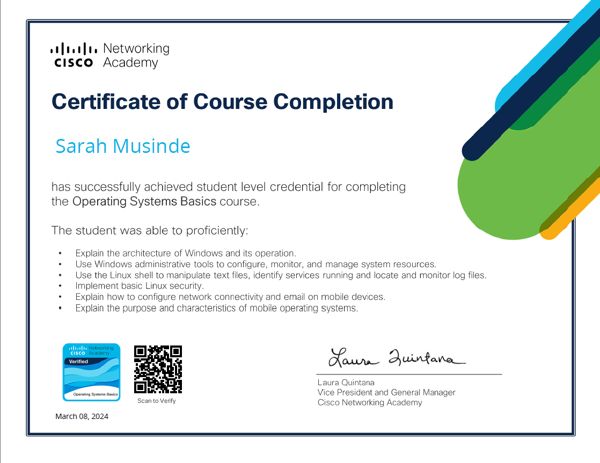
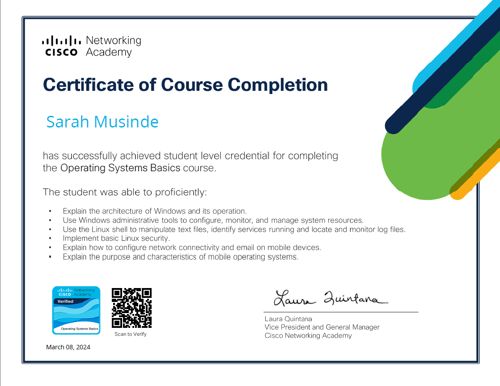

Operating Systems
- Linux(Ubuntu)
- Windows
Hello! I'm Sarah, I'm a Computer Engineer based in Congo DRC. Passionate about Everything Tech, Especially Cybersecurity.
Hello World! I'm Sarah, a computer engineer, self-taught cybersecurity professional with a deep passion for everything tech. My journey into the world of technology is not your typical story. Unlike many, I wasn't born with an innate passion for tech; instead, it developed over time through a deep love for learning and exploration. I hold a degree in computer engineering, where I uncovered this deep love for tech. I'm a perpetual learner, always eager to discover new things. The tech world is like an ever-changing adventure, full of daily challenges and opportunities, and I think that's what makes it even more exciting. Recently, I've found a strong passion for cybersecurity. From now on, I'm focusing on improving my skills and discovering more in the vast world of cybersecurity. I'm excited to see where this journey leads.
Kolwezi, DRC
musindesarah69@gmail.com
+905338334230
Currently, I'm focusing The Complete Networking Fundamentals Course. Your CCNA start.
Online | Self paced
Octobre 2023
Skills
Online | Self paced
August 2023
Skills
Cyprus International University
Year of Graduation: 2023
Skills:


 


Congo Equipement
Present
Cyprus Codes
March 2023 - April 2023


This project showcases how SQL helps security analysts uncover and address computer system security issues. By using SQL filters, it identifies anomalies in employee login attempts and detects potential threats from unexpected locations, enhancing cybersecurity defenses.